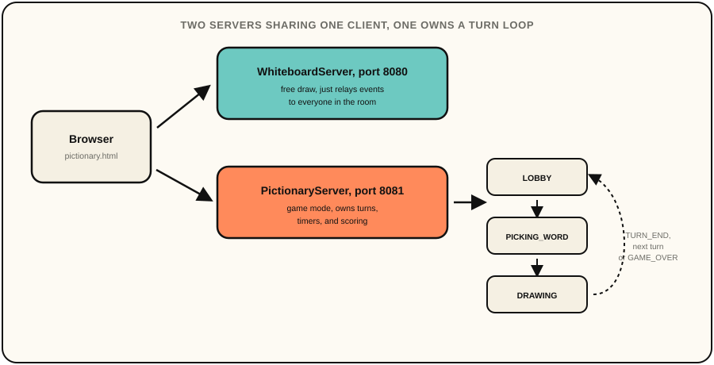

Doodle Room
A real-time collaborative whiteboard my friends and I used to take notes and draw in class. It started as just that, and it has since grown into a full skribbl.io-style Pictionary game too, which is what my AI player project plays against.
Doodle Room started as something small and practical. I wanted a whiteboard my
friends and I could all draw on at once, mostly for taking shared notes and
doodling during class instead of passing a notebook around. I built the backend
in Java on top of Java-WebSocket and kept the frontend as plain
HTML5 canvas and vanilla JavaScript, with no framework and no build step, so it
was just something I could open in a tab and use immediately.
Once the free-draw part actually worked and people were using it, I kept wanting to add "just one more thing." First cursor tracking, then a skribbl.io-style guessing game on top of the same drawing primitives. That game mode ended up being the bigger half of the project, a full turn-based Pictionary implementation with room codes, scoring, and hint timing. It runs as a second, independent server, so I never had to touch the free-draw mode to build it.
The backend is two independent Java WebSocket servers sharing one Maven build.
WhiteboardServer runs on port 8080 for free draw, and
PictionaryServer runs on port 8081 for the game mode. I split them
apart early since free draw just relays draw events to everyone in the room,
while Pictionary needs real authority over turns, timers, and scoring, and I
didn't want those two different jobs tangled into one server. The frontend for
both is plain HTML5 canvas and vanilla JavaScript, with no framework and no
build step. Each Pictionary room runs its own turn state machine, cycling
through LOBBY → PICKING_WORD → DRAWING → TURN_END until the rounds
run out.

I chose Java for the backend mainly to learn it properly, since it's a
popular language and close enough to C++, which I already knew well. It's
also a class focused language, so it forces you to think in terms
of dedicated types for a room, a player, a message, instead of leaving
everything as loose, untyped JSON, and that fit how I wanted to reason
about this project. Class and data type design turned out to be one of the
more interesting problems here, mostly because everything moving over the
WebSocket connection is JSON, but Java wants strongly typed classes. My
first pass used one flat message class with a type field and
every possible field bolted on as optional, which worked but felt sloppy,
since a DRAW message has no business carrying a
word field, and a TURN_START message has no
business carrying coordinates. I ended up defining a small hierarchy instead, a base message
type with just the type field, and Gson deserializes into the
right subclass based on that before any handler touches it. Room and Player
are the two classes almost everything else hangs off of, and both game
modes share the same underlying draw event types, since a stroke is a
stroke whether it's part of free draw or a Pictionary turn, so I never had
to write the canvas logic twice.
The trickiest part of the state machine was guarding against stale timers. Every scheduled callback, whether it's the per-second timer tick, the letter reveals, or the auto-pick-a-word timeout, captures a "turn token" and re-checks it before acting, so a callback that fires after a turn has already ended can't corrupt the next one. That came directly out of tracing through what happens when a drawer disconnects mid-turn, which was an edge case that I missed until I came across it later in the project.
Guess evaluation ended up mattering more than I expected. An exact match is the
easy case, but a guess exactly one Levenshtein edit away from the answer gets
flagged as "so close!" instead of silently failing, and that changes how the
game feels a lot more than the happy path does. Scoring follows the same idea.
Earlier and faster correct guesses are worth more
(max(20, 100 − 20×priorGuessers) + min(30, secondsLeft/2)), and the
drawer gets a flat bonus per correct guesser, so drawing well is worth
something too.
I also keep a bounded history of recent stroke events and replay it to anyone who joins mid-session, so a late joiner sees the actual canvas instead of a blank one. It's a small detail, but it's the difference between the whiteboard feeling like a shared document and feeling like you missed something.